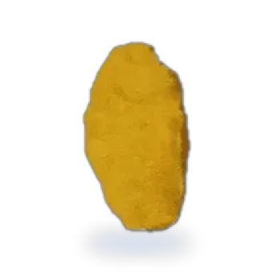
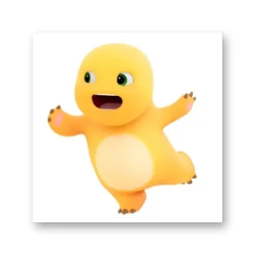
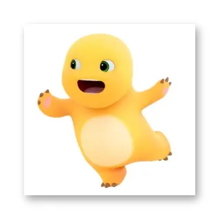
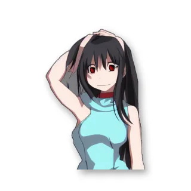
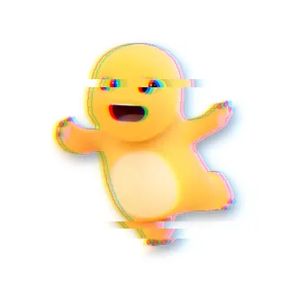
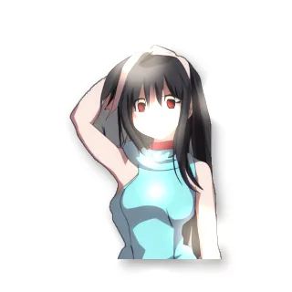
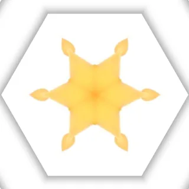
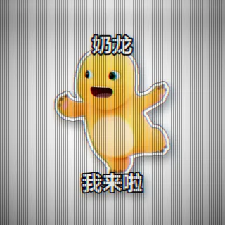
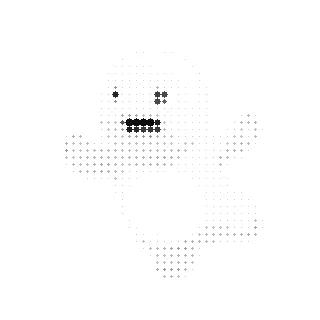
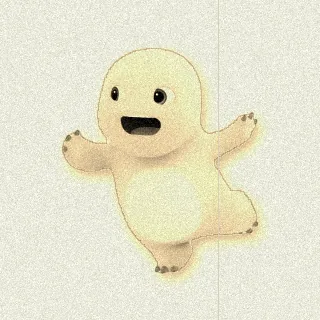

五个独立功能，点进去就能直接用。全部本地运行。

主体动效 9 种（跟着主体跑）、特殊 1 种（旋转悬浮）、画面动效 9 种（作用在整帧上）。 全部由程序生成，不依赖任何外部素材。另外还能选「无」——只出一张静态透明 PNG。

弹跳纵向弹起 + 压扁
摇摆绕轴往复旋转
残影帧缓冲衰减
故障通道错位 + 撕裂
光斑漂移虚化光斑漂浮
万花筒极坐标镜像
CRT扫描线 + 亮带
半调网点点径随亮度
老电影颗粒 + 划痕 + 闪烁